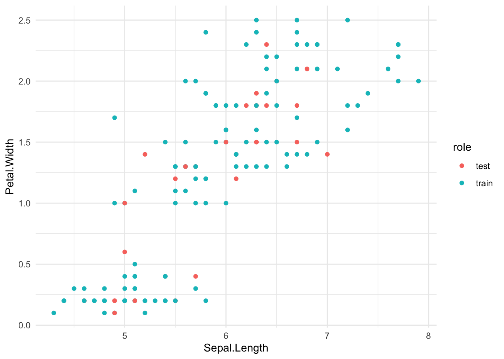
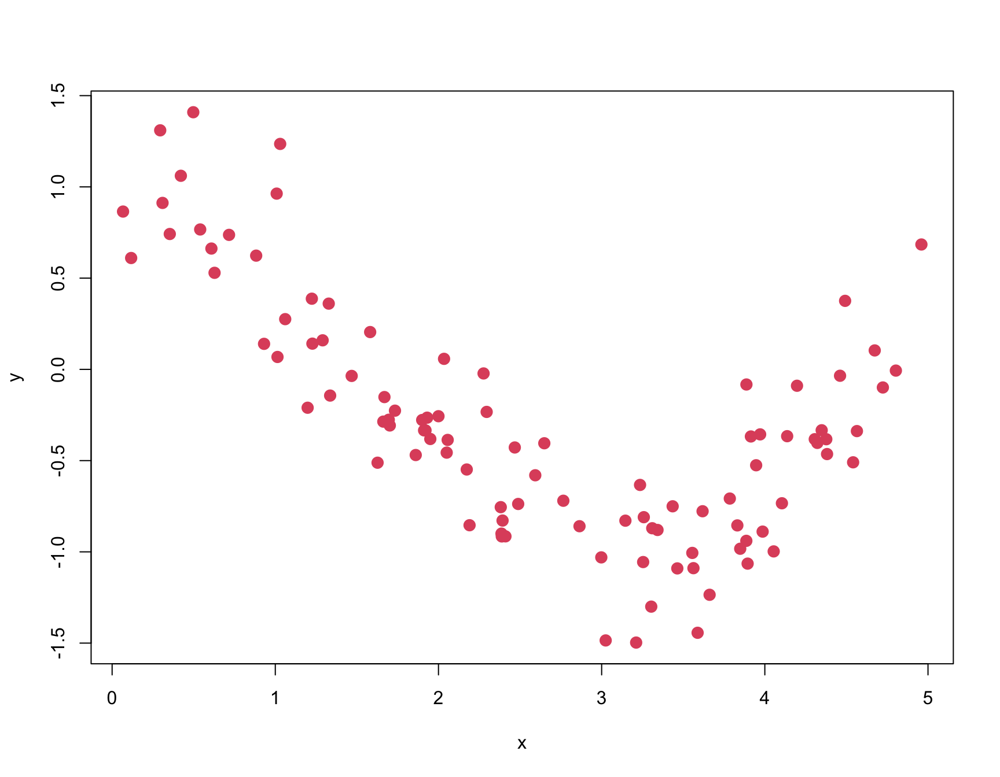
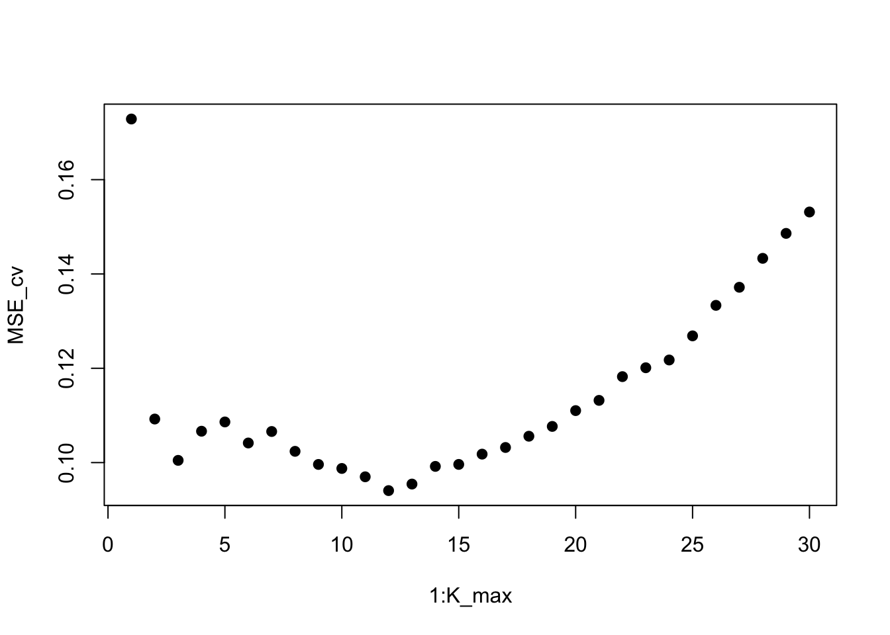
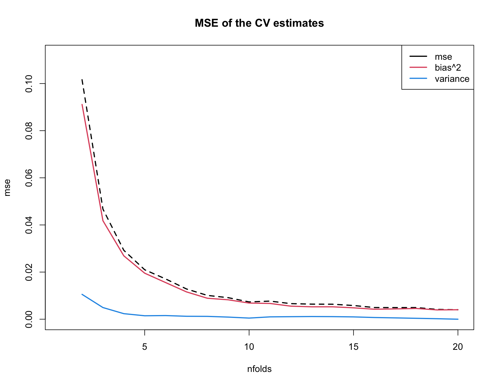
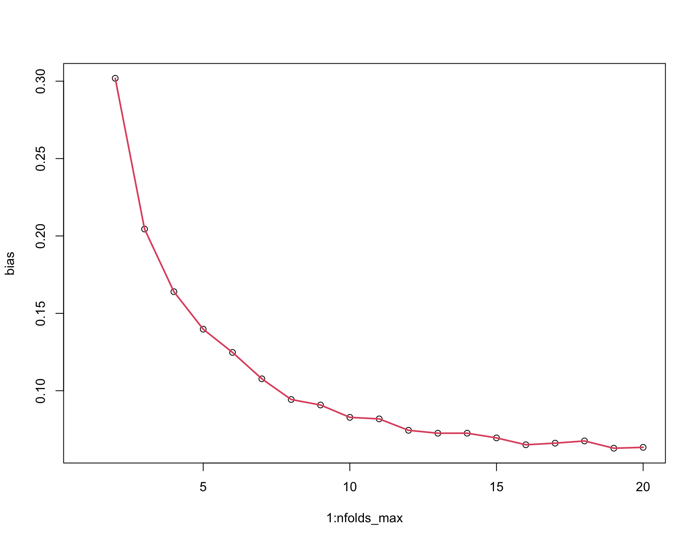

iris data is a built-in data set in R that contains measurements for 50 flowers in 3 different species and 4 different attributes.
caret package is short for Classification And REgression Training. This is a useful tool for data splitting, pre-processing, feature selection and model tuning. In this simple example I will use this package to illustrate cross-validation methods.
dplyr package is a commonly used tool for data manipulation.
tidyverse package is for data manipulation and visualization (with dplyr included).
library(caret)library(tidyverse)# Load datadata(iris)# Take a look at data str(iris)
To determine whether the designed model is performing well, we need to use the observations that are not being used during the training of the model. Therefore the test set will serve as the unseen data, then the values of the dependent variables are predicted and model accuracy will be evaluated based on the difference between actual values and predicted values of the dependent variable. We use following model performance metrics (consult lecture slides for more information):
\(R^2\)
Rooted Mean Squared Error (RMSE)
Mean Absolute Error (MAE)
Procedure for each CV method applied
Each methods below will be conducted in four steps:
Data splitting: split the data set into different subsets.
Training: build the model on the training data set.
Testing: apply the resultant model to the unseen data (testing data set) to predict the outcome of new observations.
Evaluating: calculate prediction error using the model performance metrics.
Validation Set Approach
In this approach, the available data is divided into two subsets: a training set and a validation set. The training set is used to train the model, and the validation set is used to evaluate its performance. Predictions done by this method could be largely affected by the subset of observations used in testing set. If the test set is not representative of the entire data, this method may lead to overfitting.
### Data splitting# set seed to generate a reproducible random sampleset.seed(123)# create training and testing data set using index, training data contains 80% of the data set# 'list = FALSE' allows us to create a matrix data structure with the indices of the observations in the subsets along the rows.train.index.vsa <-createDataPartition(iris$Species, p=0.8, list =FALSE)train.vsa <- iris[train.index.vsa,]test.vsa <- iris[-train.index.vsa,]# see how the the subsets are randomizedrole =rep('train',nrow(iris))role[-train.index.vsa] ='test'ggplot(data =cbind(iris,role)) +geom_point(aes(x = Sepal.Length,y = Petal.Width,color = role)) +theme_minimal()

### Training: linear model is fit using all availbale predictorsmodel.vsa <-lm(Petal.Width ~., data = train.vsa)### Testingpredictions.vsa <- model.vsa %>%predict(test.vsa)### Evaluatingdata.frame(RMSE =RMSE(predictions.vsa, test.vsa$Petal.Width),R2 =R2(predictions.vsa, test.vsa$Petal.Width),MAE =MAE(predictions.vsa, test.vsa$Petal.Width))
RMSE R2 MAE
1 0.1675093 0.9497864 0.128837
Leave-One-Out Cross-Validation: LOOCV
### Data splitting: leave one outtrain.loocv <-trainControl(method ="LOOCV")### Trainingmodel.loocv <-train(Petal.Width ~.,data = iris,method ="lm",trControl = train.loocv)### Present resultsprint(model.loocv)
Linear Regression
150 samples
4 predictor
No pre-processing
Resampling: Leave-One-Out Cross-Validation
Summary of sample sizes: 149, 149, 149, 149, 149, 149, ...
Resampling results:
RMSE Rsquared MAE
0.1705606 0.9496003 0.1268164
Tuning parameter 'intercept' was held constant at a value of TRUE
K-Fold Cross Validation
### Data splitting# set seed to generate a reproducible random sampleset.seed(123)# the number of K is set to be 5train.kfold <-trainControl(method ="cv", number =5)### Trainingmodel.kfold <-train(Petal.Width ~.,data = iris,method ="lm",trControl = train.kfold)### Present resultsprint(model.kfold)
Linear Regression
150 samples
4 predictor
No pre-processing
Resampling: Cross-Validated (5 fold)
Summary of sample sizes: 122, 120, 118, 121, 119
Resampling results:
RMSE Rsquared MAE
0.1704321 0.9514251 0.12891
Tuning parameter 'intercept' was held constant at a value of TRUE
Repeated K-Fold Cross Validation
Data splitting
# set seed to generate a reproducible random sampleset.seed(123)# the number of K is set to be 5train.rkfold <-trainControl(method ="repeatedcv", number =5, repeats =3)### Trainingmodel.rkfold <-train(Petal.Width ~.,data = iris,method ="lm",trControl = train.rkfold)### Present resultsprint(model.rkfold)
Linear Regression
150 samples
4 predictor
No pre-processing
Resampling: Cross-Validated (5 fold, repeated 3 times)
Summary of sample sizes: 122, 120, 118, 121, 119, 119, ...
Resampling results:
RMSE Rsquared MAE
0.168445 0.9525634 0.1266377
Tuning parameter 'intercept' was held constant at a value of TRUE
print(model.kfold)
Linear Regression
150 samples
4 predictor
No pre-processing
Resampling: Cross-Validated (5 fold)
Summary of sample sizes: 122, 120, 118, 121, 119
Resampling results:
RMSE Rsquared MAE
0.1704321 0.9514251 0.12891
Tuning parameter 'intercept' was held constant at a value of TRUE
Let’s summarize the results
CV method
RMSE
R2
MAE
Validation Set
0.1675
0.9498
0.1288
LOOCV
0.1706
0.9496
0.1268
K-Fold
0.1704
0.9514
0.1289
K-Fold repeat
0.1704
0.9514
0.1289
What do you note?
Part II: Simulation
KNN
Recall our KNN classifier from earlier where the following function was used:
KNN =function(x0, x, y, K) { distances =abs(x - x0) # Euclidean distance between x0 and each x_i o =order(distances) # order of the training points by distance from x0 (nearest to farthest) y0_hat =mean(y[o[1:K]]) # take average of the y values of the K nearest training pointsreturn(y0_hat) # return predicted value of y}
where:
\(x_0\) as the new point at which we wish to predict \(y\)
\({\bf x} = (x_1,x_2, \dots, x_n)\) as the vector of training \(x\)’s
\({\bf y} = (y_1,y_2, \dots, y_n)\) as the vector of training \(y\)’s
\(K\) as number of neighbors to use
\(\hat{y}_0\) as the predicted value of \(y\) at \(x_0\)
Simulate data
We also simulate training data as before and plot it:
set.seed(1) n =100x =5*runif(n)sigma =0.3f =function(x) { cos(x) } y =f(x) + sigma*rnorm(n) plot(x,y,col=2,pch=20,cex=2) # plot training data

K-Fold Cross Validation
Here we are going to use cross-validation to estimate test performance of the KNN classifier. We set number of neighbors as \(K=1\) and use the 10-fold cross validation. We do a random ordering of all the available data, and initialize a vector to hold MSE for each fold. For each fold, we then create a training and test (hold one out/validation) set, run KNN at each \(x\) in this test set (the one left out), and compute MSE on this test set. Then we average the MSE over all folds to obtain the CV estimate of test MSE:
Next we compare with the ground truth estimate of test performance, given this training set. Because this is a simulation example, we can generate lots of test data. We simulate \(x\)’s and \(y\)’s from the true data generating process. Then we run the KNN classifier at each \(x\) in the test set and compute the MSE on the test set:
With the following example, we will illustrate how to use cross validation to choose the optimal number of neighbors \(K\) in KNN. We start with a rather high number of \(K\) to try for KNN (\(K=30\)) and use 10 folds for each of these cases in the cross validation. Then we do a random ordering of data and initialize vector for holding MSE’s. For each number of folds in the range, we compute the training and test set as before (this is again the validation set). For each \(K\) up to 30, we then run KNN at each \(x\) in the test set (the one left out), and compute MSE on the this test set. We average across folds to obtain CV estimate of test MSE for each \(K\) and plot the results:
We plot CV estimate of test MSE against number of neighbors \(K=1,2,\dots,30\), and choose the value of \(K\) that minimizes estimated test MSE. Compare with a ground truth estimate of test performance by using the chosen number of \(K\) and running KNN on each \(x\) in the test set (denoted x_test above). Why do you think the test performance estimate for the chosen \(K\) tend to be smaller than the ground truth estimate of test performance in this example?
plot(1:K_max, MSE_cv, pch=19) # plot CV estimate of test MSE for each K

# Choose the value of K that minimizes estimated test MSEK_cv =which.min(MSE_cv)K_cv
[1] 12
Answer: MSE_cv[K_cv] may systematically underestimate or overestimate test MSE! There are two sources of bias: K_cv is the minimum, and the pseudo-training set is smaller than \(n\).
Choosing the number of folds
We start by simulating training data as before:
set.seed(1) n =20x =5*runif(n) sigma =0.3y =f(x) + sigma*rnorm(n)
We then compute “ground truth” estimate of test performance, given this training set. We set \(K=10\), and run KNN at each \(x\) in the test set and compute MSE on the test set:
K =10y_test_hat =sapply(x_test, function(x0) { KNN(x0, x, y, K) }) MSE_test =mean((y_test - y_test_hat)^2)
Next, we repeatedly run CV for a range of number of folds nfolds up to maximum \(n=20\) (same as \(n\) above in our simulated data). We repeat the simulation 200 times, and for each repetition and number of folds, we split the training data into training and test (hold one out/validation set). We run KNN at each \(x\) in this test set and compute MSE. We then average the MSE’s for each case with a different number of folds:
nfolds_max = n # maximum value of nfolds to use for CVnreps =200# number of times to repeat the simulationMSE_cv =matrix(0,nreps,nfolds_max) for (r in1:nreps) { for (nfolds in1:nfolds_max) { permutation =sample(1:n) MSE_fold =rep(0,nfolds) for (j in1:nfolds) { test = permutation[floor((j-1)*n/nfolds+1) :floor(j*n/nfolds)] train =setdiff(1:n, test) y_hat =sapply(x[test], function(x0) { KNN(x0, x[train], y[train], K) }) MSE_fold[j] =mean((y[test] - y_hat)^2) } MSE_cv[r,nfolds] =mean(MSE_fold) }}
We compute the MSE, bias, and variance of the CV estimate of test MSE, for each value of nfolds and plot MSE, bias^2, and variance of the CV estimate, for each value of nfolds.
mse =colMeans((MSE_cv - MSE_test)^2)bias =colMeans(MSE_cv) - MSE_testvariance =apply(MSE_cv,2,var)# plot of MSE, bias^2 and variance against number of foldsplot(1:nfolds_max, type="n", ylim=c(0,max(mse[2:nfolds_max])*1.1), xlab="nfolds", ylab="mse", main="MSE of the CV estimates")lines(1:nfolds_max, mse, col=1, lty=2, lwd=2, ylim=c(0,0.2))lines(1:nfolds_max, bias^2, col=2, lwd=2)lines(1:nfolds_max, variance, col=4, lwd=2)legend("topright", legend=c("mse","bias^2","variance"), col=c(1,2,4), lwd=2)

# plot bias against number of foldsplot(1:nfolds_max, bias)lines(1:nfolds_max, bias, col=2, lwd=2)

In the following plot below, why do you think the bias of the CV estimate of test MSE is always positive?
# plot bias against number of foldsplot(1:nfolds_max, bias)lines(1:nfolds_max, bias, col=2, lwd=2)
Answer: Because the the “pseudo”-training set (each fold) is smaller than the training set.